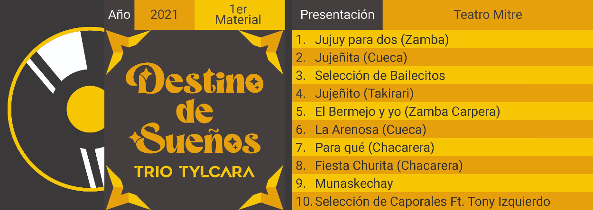

Biografía
Somos un grupo de amigos que unimos nuestro sueño de sembrar la semilla de la música en nuestra tierra, formado y forjado en Jujuy con todas nuestras raíces bien jujeñas.
Contamos con un rico temario musical recorriendo cancioneros populares argentinos, como así también música andina en el repertorio de huainos y caporales, destacando el uso de guitarras, charangos y vientos como instrumentos representativos de nuestro folklore.
Objetivos
Nuestro objetivo como agrupación es principalmente llegar a escenarios nacionales e internacionales con el propósito de interpretar y difundir honradamente la cultura, arte y paisajes que abrazan a nuestro amado Jujuy, en todos los espacios y lugares que pise el "Trio Tylcara".
Para eso, estamos trabajando duro; creando videos promocionales, participando en eventos locales y dándonos a conocer a través de redes sociales. Hasta el momento, hemos logrado conseguir la estructura deseada que muy prontamente será desarrollada y llevada a cabo profesionalmente por nuestro equipo para cumplir con nuestras metas.
Discografía
Apasionados y convencidos de que la música es un arte que cura y abarca el alma, presentamos nuestra primera placa discográfica titulada: "DESTINO DE SUEÑOS". Este emotivo álbum captura la esencia de nuestra expresión artística y representa un viaje musical que compartimos con nuestros seguidores.
